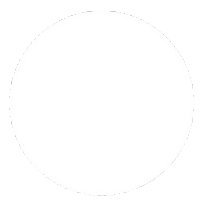
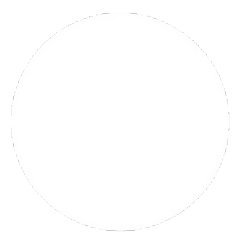

Brunei
ประเทศบรูไน เป็นประเทศที่ตลาดเปิดแบบเสรี ภายใต้การดูแลของรัฐ มีชื่อเป็นทางการว่า "เนการาบรูไนดารุสซาลาม" มีเมือง "บันดาร์เสรีเบกาวัน" เป็นเมืองหลวง ถือเป็นประเทศที่มีขนาดไม่ใหญ่นัก ปกครองด้วยระบบสมบูรณาญาสิทธิราช โดยมีพระมหากษัตริย์เป็นประมุข ประชากรเกือบ 70% นับถือศาสนาอิสลาม และใช้ภาษามาเลย์เป็นภาษาราชการ
รายได้หลักของประเทศ จะมาจากน้ำมัน และก๊าซธรรมชาติ และนับเป็นผู้ผลิตน้ำมันรายใหญ่ อันดับที่ 4 ในเอเชียตะวันออกเฉียงใต้ และมีสินค้านำเข้าส่วนใหญ่จากสิงคโปร์ อังกฤษ สหรัฐอเมริกา โดยเป็นสินค้าประเภท เครื่องจักรอุตสาหกรรม รถยนต์ เครื่องมือเครื่องใช้ไฟฟ้าต่างๆ และสินค้าเกษตร
ธงชาติบรูไน เป็นธงสี่เหลี่ยมผืนผ้าสีเหลือง มีแถบสีขาวและสีดำ พาดทแยงมุม โดยสีขาวอยู่ด้านบน สีดำอยู่ด้านล่าง ตรากึ่งกลางผืนธงมีภาพตราแผ่นดินของบรูไน แต่เดิมประเทศบรูไนใช้ธงสีเหลืองล้วนๆ เป็นสัญลักษณ์ ต่อมาได้คาดแถบสีขาว–ดำ และปรับเปลี่ยนแบบธงอีกครั้งโดยเพิ่มรูปตราแผ่นดินดังเช่นในปัจจุบัน
ซึ่งสีและสัญลักษณ์ ต่างๆ มีความหมาย ดังนี้
★ สีเหลือง หมายถึง กษัตริย์
★ สีขาว และสีดำ หมายถึง มุขมนตรี (เทียบเท่าตำแหน่งนายกรัฐมนตรี)
 

ชุดประจำชาติของประเทศบรูไน
ชุดประจำชาติของบรูไนคล้ายกับชุดประจำชาติของประเทศมาเลเซีย โดยชุดของผู้ชายกับผู้หญิงมีชื่อเรียกต่างกัน ดังนี้
ชุดประจำชาติของผู้หญิง เรียกว่า “บาจูกุรุง (Baju Kurung)”
ผู้หญิงบรูไนจะแต่งกายด้วยเสื้อผ้าที่มีสีสันสดใส โดยมักจะเป็นเสื้อผ้าที่คลุมร่างกายตั้งแต่ศีรษะจรดเท้า
ป็นการสะท้อนวัฒนธรรมสังคมแบบอนุรักษ์นิยม
เพราะบรูไนเป็นประเทศมุสสิม
ชุดประจำชาติของผู้ชาย เรียกว่า “บาจู มลายู (Baju Melayu)”
จะแต่งกายด้วยเสื้อแขนยาว ตัวเสื้อยาวถึงเข่า นุ่งกางเกงขายาวแล้วนุ่งโสร่ง
ดอกไม้ประจำชาติประเทศบรูไน
ดอกไม้ประจำชาติบรูไน ก็คือ ดอกซิมปอร์ (Simpor) หรือที่รู้จักกันในชื่อ ดอกส้านชะวา (Dillenia) ดอกไม้ประจำท้องถิ่นบรูไน ที่มีกลีบขนาดใหญ่สีเหลือง หากบานเต็มที่แล้วกลีบดอกจะมีลักษณะคล้ายร่ม พบเห็นได้ตามแม่น้ำทั่วไปของบรูไน มีสรรพคุณช่วยรักษาบาดแผล หากใครแวะไปเยือนบรูไน จะพบเห็นได้จากธนบัตรใบละ 1 ดอลลาร์ ของประเทศบรูไน และในงานศิลปะพื้นเมืองอีกด้วย
สกุลเงินประเทศบรูไน
- สกุลเงินของประเทศบรูไนเป็นสกุลเงิน รูเปียห์ ดอลลาร์บรูไน
- อัตราแลกเปลี่ยน 1 ดอลลาร์สหรัฐเท่ากับประมาณ 1 ดอลลาร์บรูไน (date : 10.11.62)
- สกุลเงินดอลลาร์บรูไน 1 ดอลลาร์บรูไน แลกเป็นเงินไทย อยู่ที่ประมาณ 22 บาท (date : 10.11.62)
- บรูไนมีความตกลงแลกเปลี่ยนเงินกับสิงคโปร์ทำให้เงินดอลลาร์บรูไน
มีมูลค่าเท่ากับเงินดอลลาร์สิงคโปร์ และสามารถใช้แทนกันได้